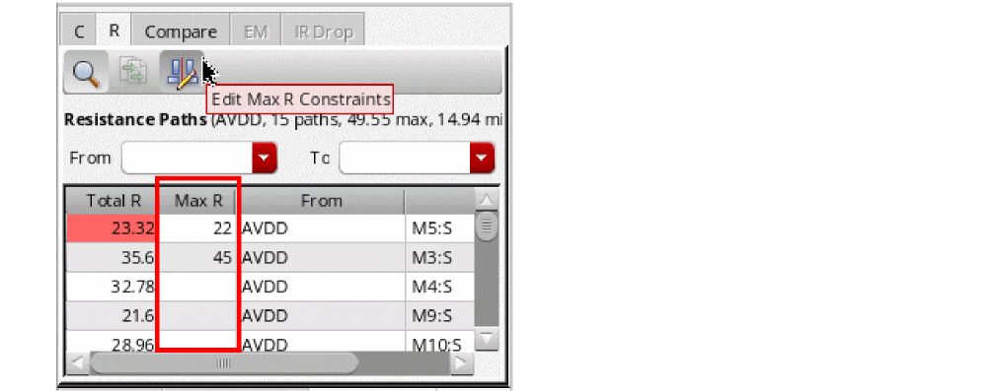

6
Resimulating Designs with Extracted Parasitics
The parasitic information of the design gets updated dynamically while you run electromigration analysis and make changes in the layout to resolve violations. You can use this information, which you can get from a partial or complete layout, to regenerate a netlist and then rerun simulations in ADE Assembler to check if the output specifications are still met. If required, you can further modify design variables and parameters or the layout to meet the desired results.
This chapter describes the enhancements in the parasitic aware design flow and how to use parasitics from the layout view to run simulations in ADE Assembler.
This chapter includes the following topics:
- Preparing the Parasitic Setup
- Running Simulations and Verifying Specifications
- Using Extracted Parasitics to Run Spectre EM/IR Analysis
- Using Parasitic Values from Multiple Sources
- Running Advanced Simulation Runs to Improve Designs
- Viewing and Updating Layout Parasitics in VSE XL
Running Simulations with Layout Parasitics
After the electromigration analysis is complete and violations are resolved, reopen the adexl view of your design. Next, prepare the parasitic setup by including layout parasitics and rerun simulations.
The following topics describe how to perform parasitic resimulations:
Preparing the Parasitic Setup
Preparation of parasitic setup involves creation of a netlist_layout view or a DSPF file that contains parasitics and other layout-dependent effects (LDE) to be used in simulation.
The following sections describe the steps to prepare a parasitic setup in different ways:
- Creating a Netlist Cellview with Layout Parasitics in Virtuoso Layout EAD
- Creating a Netlist Cellview with Layout Parasitics in Virtuoso ADE XL or ADE Assembler
- Creating a DSPF File with Layout Parasitics in Virtuoso Layout EAD
Creating a Netlist Cellview with Layout Parasitics in Virtuoso Layout EAD
To create a netlist cellview from Layout EAD, click  on the EAD toolbar or the EAD Browser toolbar and choose Build Parasitic/LDE Netlist View
on the EAD toolbar or the EAD Browser toolbar and choose Build Parasitic/LDE Netlist View
On the General tab, the library and cell name of the layout view are displayed in the Library Name and Cell Name fields.
On the Layout tab, enter a name to be used for the netlist view in the View Name field. Specify other values on this form.
- Parasitics & LDE Setup form field description
Click OK to close the form and to build the netlist view.
A message box displaying a summary of parasitics and other LDEs included in the netlist view is displayed. Click OK to close this message.
Creating a Netlist Cellview with Layout Parasitics in Virtuoso ADE XL or ADE Assembler
This method is helpful when the schematic and layout views are available in different libraries. Perform the following steps to prepare a netlist from ADE XL or ADE Assembler:
-
In the ADE Assembler window, choose Parasitics/LDE – Setup.
The Parasitics & LDE Setup form is displayed, as shown below.
The General tab shows the schematic view of the DUT. -
Open the Layout tab and specify a name for the netlist layout view to be created with the parasitics. By default, this is set to
netlist_layout.
- Using the following drop-down lists, select the library, cell, and view names of the layout view from where the parasitics will be read in:
-
Specify the following values in the Parasitics section:
-
Select any one of the following options for the Include parasitics from field:
- Layout: To include parasitics from the layout view for the design
- MODGEN constraints: To include parasitics from MODGEN constraints. When you select this option, the layout view is not checked for parasitics. A dummy layout is created by placing all MODGEN constraints and device instances. A netlist is then created by using that dummy layout.
If you extracted parasitics for multiple corners in the layout view, names of all the corners are listed in the Extraction corner for layout parasitics list. - Select the name of corner for which you want to use parasitics in the netlist layout view.
- Specify the name of a ground net in the Reference net for Grounded C field. You can also select a net from the schematic by clicking on Select from Schematic.
- By default, the Expand Devices with M-Factor check box is selected, which implies that Virtuoso looks for cells in the layout that have parameters defining multiple factors. If the corresponding cell in the schematic view does not contain an equal number of factors, before generating the netlist, multiple copies of that schematic cell are created to establish the connection. If not required, clear this check box.
- When you select this check box, also specify the names of the CDF parameters that define m-factor parameters of devices in the Device M Factor Parameter Names field on the General tab.
- If there are any dummy cells backannotated from the layout to the schematic view, you can choose to include them while generating the netlist for simulation by clearing the Ignore Dummies Back-Annotated to Schematic check box. By default, such dummy cells are ignored.
For more details about the Setup Parasitics & LDE form, see Parasitics/LDE –Setup in the Parasitic Aware Design User Guide. -
Select any one of the following options for the Include parasitics from field:
- If required, configure other settings in this form.
-
Click Apply to save the settings.
The tool validates the entries in the form. -
Click OK to close the form.
Virtuoso creates a netlist view with the name specified in the Netlist View Name field. This netlist view includes the parasitics from the layout view.
The simulation mode in ADE Assembler is automatically changed toLayout (Parasitics/LDE). This is the mode in which ADE Assembler runs simulations with parasitics included in the netlist.A netlist created from a layout view merges the parasitics from both the layout view and the schematic view. While doing that, preference is given to the parasitics in the layout view. For example, if you have specified both resistance and capacitance for a net in the schematic view, whereas, only capacitance for that net in the layout view, the netlist with get the capacitance value from the layout and resistance value from the schematic. To use only the parasitics from the layout view and to ignore all the estimated parasitics from the schematic, set the mixSchEstWithLayoutParasitics environment variable tonil.
The Build Parasitic/LDE View form is displayed. If required, specify the scaling factors for parasitics and click OK.
Creating a DSPF File with Layout Parasitics in Virtuoso Layout EAD
To export the parasitics from Layout EAD into a DSPF file, click on the EAD toolbar or the EAD Browser toolbar and choose Generate DSPF File
. The Parasitics & LDE Setup form is displayed.Validate the information on the General tab and make changes, if required.
Open the DSPF tab, as shown below.
This tab shows the settings used to write parasitic data in a DSPF file. If required, customize the settings.
Click OK to close the form and generate the DSPF file.
A DSPF file is saved with the specified name in the current directory. You can use this file to run Spectre simulations in ADE Assembler. For more details, refer to __.
- Parasitics & LDE Setup form field description
Running Simulations and Verifying Specifications
After the estimated view is built successfully, run a new simulation for your design and view the results to analyze how the desired output specifications are met. The color codes on the Results tab indicate the pass, fail, or near pass status, as shown in the figure below.
Comparing the Simulation Results
You can compare the results with that of the previous simulations, which were run without using the parasitic estimates. For this, you can use the Spec Comparison form in ADE Assembler.
On the Results toolbar, click (Spec Comparison) to open the
Spec Comparison
For more details on Spec Comparison, refer to
The result comparison summary helps in analyzing the impact of parasitics on the design performance. Accordingly, you can decide the further actions to be taken to improve the design schematic or layout.
Using Extracted Parasitics to Run Spectre EM/IR Analysis
The extracted parasitics can be saved in DSPF files, which you can include in Spectre EM/IR analysis. This provides the capability to use the Spectre solver for the generation of current data. You can further use that current data to run EM checks in EAD.
To use the extracted parasitics to run Spectre EM/IR analysis, perform the following steps:
- Open the layout view of the design.
-
Open the EAD Browser, and run parasitic extraction by using the Extract Parasitics for All Nets command.
Check the extracted parasitics data. -
Use the Export Parasitics – Generate DSPF File command to save the parasitic details in a DSPF file.
-
Specify the settings for DSPF file generation as explained in Creating a DSPF File with Layout Parasitics in Virtuoso Layout EAD.
A .dspf file is saved with the extracted parasitics. - Open the maestro cellview for the design in Virtuoso ADE Explorer.
- Choose Setup – Simulation Files to open the Simulation Files Setup form.
-
Specify the name of the saved DSPF file in the Simulation Files Setup form.
- Choose Setup – EM/IR Analysis to open the Spectre EMIR / Voltus-Fi XL Analysis Setup form.
- Do the following:
- Run simulation in ADE Explorer and save results.
- Open the layout view again.
-
In the EAD Browser, create a user-defined dataset by using
Spectre EM/IR Resultsas the current source.
For more details, refer to Creating User-Defined Custom Datasets. -
Run EM analysis in EAD Browser.
EAD runs EM analysis for the nets by using the saved current dataset.
Using Parasitic Values from Multiple Sources
If you have defined some important parasitics in the schematic view of your design, you can choose to use them along with the parasitics from layout.
To create parasitic estimates, in the ADE Assembler window, choose Parasitics/LDE – Create Estimates. The Parasitics & Electrical Setup assistant is displayed. Select a net or terminal on the schematic and choose the type of estimate to be created. A new estimate is created. For more details, refer to
You can now add parasitic estimates from other sources, such as a layout view, in any one of the following ways:
- By setting the source of a parasitic estimate to a layout
- By creating layout stitching estimates for a cell
Setting the Source of a Parasitic Estimate to a Layout View
To specifically set the source for an estimate to a layout view, do the following:
- Open the schematic view of your design.
- Select the nets for which you want to create parasitic estimate constraints.
-
In the
Parasitics and Electrical Setup
assistant, click Create Estimated Capacitance to create a capacitance estimate, or Create Estimated Resistance to create a resistance estimate.
A new estimate is created for the net and displayed in the assistant. - Select the newly created estimate and open the Estimate Editor section.
By default, the source property of a newly created estimate is set to manual.
-
Change the source property for the estimate to
layout view, as shown in the figure below.
When you change the source of the estimate, the tool automatically adds three properties, layLib, layCell, and layView, and shows the names of the library, cell, and first found layout view for the current cell.
In this way, you can add a mixed set of estimates, with different sources, for a particular cellview. When you run a simulation with schematic estimates the next time, parasitic estimates will be included according to the source type.
Creating Layout Stitching Estimates for a Cell
If you want to get all the parasitics from a layout view, you can create a layout stitching estimate. For this, in the Parasitics and Electrical Setup assistant, click Create Layout Stitching Estimates for Cell.
Two new estimates, one of R and C type each, are created, as shown in the figure below.
The new estimate is attached to a layout view from where it is pulling all the R or C estimates.
Running Advanced Simulation Runs to Improve Designs
If the simulation results or the spec comparison reports indicate that the design performance is not as expected, you need to modify the design schematic or design parameters or the layout and rerun simulations until you get the desired results.
Some of the run modes in ADE Assembler help in identifying the design or parameter settings that can generate the desired results. Some of the possible ways to achieve the desired results are given below:
- Run a local or global optimization to find out the best design point. For more details, refer to Virtuoso ADE Assembler User Guide.
- Use the manual tuning run mode to run simulations with different parameterization setups and modify the design between different runs manually.
- Update the layout of devices, re-extract parasitics, run EM checks and resimulate the design with parameters.
Important Points to Note
-
In the
Local Optimizationrun mode, you can sweep the values of device parameters to identify the best design point that meets the desired specifications. For details on extracted view optimization, refer to Optimizing an Extracted or Layout View in the Virtuoso Parasitic Aware Design Flow User Guide. - After you modify the devices in schematic or change the design parameters, you can rebuild the netlist_layout view with the same layout parasitics. You do not have to make any changes in the layout until you have found a good solution.
Viewing and Updating Layout Parasitics in VSE XL
During the resimulation phase of the EAD flow, you can identify the effect of layout parasitics on the simulation results of your design. As described in Running Simulations with Layout Parasitics, you can create a netlist using the layout view that includes parasitics, run simulation, and compare the results with the simulation results obtained for the schematic view.
As a circuit designer, you can also visualize the layout parasitics on the schematic view to analyze how they have affected the simulation results. If the specifications for simulation results are not being met, you can tune the devices and apply constraints to provide guidance to the layout designer for the placement of those devices. In this way, you can collaborate with the layout designer to ensure that the layout is electrically correct.
The EAD Browser assistant in the schematic view provides the capability to overlay the layout parasitics on the schematic. This assistant provides access to parts of the EAD Browser that are useful to the circuit designer.
To open the EAD Browser assistant in VSE XL window,
The EAD workspace for VSE XL is loaded. This workspace consists of:
- The EAD Browser assistant that is displayed to the left of the schematic diagram.
- The EAD toolbar that is displayed on top of the layout canvas. This toolbar is not visible by default. To view the toolbar, choose Window – Toolbars – EAD Toolbar.
- The EAD menu. This menu contains the command to open the EAD Options form.
Initially, the EAD Browser assistant shows the fields required to prepare the setup, as shown below.
For the EAD Browser to retrieve the parasitics from the layout view, the first step is to choose a layout view. Select the layout view corresponding to the current schematic, and then select a mode in which you want to access it.
You can choose from the following three modes:
-
Copy: Copies the entire top-level cell to a new cell that you can manage. This allows you to make changes to the extraction engines, the filtering options, and the layout without involving the layout engineer. In this mode, when any changes are done in the source layout view, you are prompted to update the saved copy to reflect the changes. If you agree, the copy of the layout view is updated. If not, the saved copy is not updated at that time, but is automatically updated later when you use the Update Parasitics & EM command from the EAD Browser Toolbar.
By default, the new cell in which the top-level cell is copied is created in the same library. However, if you do not have write permission to that location, you can specify a different library name in the Copy Library drop-down list, which is enabled only in the copy mode. -
Read: (Default) Opens the layout view in read mode, which means that you can view any saved parasitics, but cannot make changes to the extraction engines or the filtering options. Only the layout designer can make changes and those changes are always reflected in your view. This mode avoids duplication of data. -
Edit: Opens the layout view in edit mode, which means that you will be able to make changes to the extraction engines, the filtering options, and parasitics. The changes will be available to the layout engineer later, but the view will be locked while you are using it.
If the useSetup environment variable is set to the path of the file that contains the setup options to be used, the Use Setup check box is selected by default, and the name of the EAD setup is displayed in the Setup Name drop-down list. Otherwise, you can select the check box and choose a setup filename.
Click Start EAD in the EAD Browser assistant to bind the given layout cellview to the schematic cellview and to view the details of EAD Browser, as shown below.
Important Points to Note
-
The setup details, including the process settings, extraction engine controls, high precision C and R extractor settings, and so on. are loaded from the EAD setup file selected on the Welcome to EAD form.
-
The EAD Browser assistant in VSE XL is the same as that available in Virtuoso Layout Suite XL, except for the following differences:
- Display annotations on the schematic (): Annotates the net capacitance and current for instance terminals on the schematic.
- Show Layout (): Opens the layout view corresponding to the current schematic view. This layout is the same as that selected on the Welcome to EAD form.
- Run Pre-EM Checker & Generate Report (): Runs the pre-EM check in VSE XL and generates the pre-EM report. This option is available only if the No Layout check box is selected in EAD Browser assistant of the VSE XL.
-
Currently, you cannot view the electromigration information for the nets or perform electromigration checks in the schematic view. Therefore, the commands in the EM Checker menu () are not available.
Depending on the mode (Copy,Read, orEdit) in which the layout view is being accessed, different sets of commands are enabled or disabled on the EAD Browser toolbar. For example, inReadmode, you can only read and display the available parasitics. Therefore, the commands to edit EAD setup, extract parasitics, and update electrical data are disabled on the EAD Browser toolbar, as shown below.
For details of all the commands, refer to EAD Browser Toolbar.
-
The EAD Browser assistant in VSE XL is the same as that available in Virtuoso Layout Suite XL, except for the following differences:
The following sections describe how you can use the EAD Browser in VSE XL to view and update parasitics in the schematic view:
- Viewing Parasitics
- Extracting Parasitics
- Annotating Parasitics on the Schematic
- Modifying Parasitics on the Schematic
- Building Netlist to Run Simulations
Viewing Parasitics
Irrespective of the mode in which you access the layout view, details of the parasitics already available in the layout are displayed in the Summary pane. This includes the count of the capacitance and resistance for each net. When you click a net in the Summary pane, its details are displayed in the detail pane of the assistant, as shown below.
By default, the Capacitance By Layer and Capacitance by Node tables are not visible on the C tab of the detail pane they require detailed knowledge of the layout topography which is not visible to the circuit view. You can display them by setting the detailedParasiticTables environment variable to t or by selecting the Detailed Parasitic Tables check box on the Environment tab of the EAD Options form.
By selecting a row in the detail pane, you can view how Rs and Cs are placed on the corresponding net in the circuit. Selecting a column for capacitance or resistance count opens the net6.
There can be multiple resistance paths in the layout between the two logical circuit points.
Probing Resistances for Nets, Terminals, or Instance Terminals Selected on Schematic
While you are working with the design schematic, you can interactively view resistance paths on a particular net or between selected terminals.
For selected probing, perform these steps:
- To enable selected probing, choose Filtering Options – Selected on the EAD Browser toolbar.
-
To view the resistance paths on the R tab of the detail pane, select a net or terminal on the schematic as described below.
To view the resistance paths, do this:- Select a net to view all the resistance paths from or to that net
- Select an instance terminal or a terminal to view all the resistance paths from or to that terminal on the connected net
- Select more than one terminal to view all the resistance paths between those two terminals
In the example shown below, the resistance paths on the selected netnet10are displayed.
Similarly, the following example shows the resistance path between two instance terminals.
For more details about the Resistance Paths table and the information contained in it, refer to
Probing Capacitance for Nets Selected on Schematic
Similar to resistance, you can interactively view coupled capacitance values for one or more nets selected on the schematic.
For selected probing, perform these steps:
- Choose Filtering Options – Selected on the EAD Browser toolbar.
-
On the schematic, select one or more nets, as described below:
- To view the coupling capacitance for a single net, select that net on the layout canvas
- To view the coupling capacitance between two selected nets, select those two nets
- To view the coupling capacitance between multiple nets, select all those nets
The coupling capacitance values corresponding to your selection are displayed on the C tab of the detail pane.
In the example shown below, the coupling capacitance between the selected net AVDD and all other nets connected to it, IN and OUT, is displayed.
In the example shown below, the coupling capacitance between the selected nets AVDD and IN are displayed. The coupling capacitance between other nets is hidden.
In the figure shown above, the Net and To Net columns in the Coupling Caps table show the from and to nets between which the coupling capacitance value is found.
Another example given below shows how the coupling capacitance is reported when multiple nets are selected.
Finding a Specific Resistance Path
You can search for specific resistance paths between two instance terminals, or beginning from or ending at the selected instance terminal. For example, the figure given below shows the resistance paths from M3:D.
Extracting Parasitics
Only when layout is accessed in edit or copy mode.
If the parasitics are not available in the layout view, you can extract them for all the nets by using the () command menu on the toolbar. Alternatively, you can extract parasitics for only a few selected nets by using the Extract Parasitics command from the context menu in the Summary pane. For more details, see
Extracting Parasitics in Layout EADViewing and Editing Constraints
In addition to the Constraint Manager assistant, you can directly view or edit the Max Resistance and Max C constraints for specific nets in the EAD Browser. For more details, refer to the following topics:
- Viewing and Editing the Max Resistance Constraint in the EAD Browser
- Viewing and Editing the Max Capacitance Constraint in the EAD Browser
- Viewing and Editing the Max Coupling Capacitance Constraint in the EAD Browser
Viewing and Editing the Max Resistance Constraint in the EAD Browser
To edit the Max Resistance constraint for a net in the EAD Browser:
-
Click in the R Count column for a particular net on the Summary pane of the EAD Browser.
Alternatively, open the R tab in the detail pane, and then select the net on the schematic. - Click Edit Max R Constraints ( ) on the toolbar of the R tab.
-
The Count column in the resistance paths table is changed to Max R. This column shows the existing constraint values, if defined in the constraint view. Otherwise, the cells are blank.
 -
If required, double-click in the column and edit the constraint values.
You can also use the Edit Max R Constraint and Delete Max R Constraint commands from the context-sensitive menu of the detail pane to edit or delete the constraints.
When you save the schematic view, the constraint values are also saved in the constraint view.
Viewing and Editing the Max Capacitance Constraint in the EAD Browser
To edit the Max Capacitance constraint for a net in the EAD Browser:
- Right-click the row for a net on the Summary pane of the EAD Browser.
-
Choose Constraints – Edit Max Capacitance Constraints from the context menu.
The EAD - Edit Max Capacitance Constraint form is displayed, as shown below.
The default constraint values are displayed in the form. -
Edit the required constraint values and click OK.
The constraint is added to the selected net and is visible in the Constraint Manager assistant, as shown in the example given below.
A check for any capacitance values is also done and the violations are highlighted in red.If you need to apply the same constraint value to multiple nets, select the nets in the EAD Browser and use the Edit Max Capacitance Constraints command to create or edit the constraint.You can also use the Delete Max Capacitance Constraint command from the context-sensitive menu of the selected net on the Summary pane to delete the constraint.
Viewing and Editing the Max Coupling Capacitance Constraint in the EAD Browser
To edit the Max Coupling Capacitance constraint between two nets in the EAD Browser:
- Select two nets in the Summary pane of the EAD Browser.
-
Right-click and choose Constraints – Edit Max Coupling Capacitance Constraints from the context menu.
The EAD - Edit Constraint form is displayed, as shown below.
- Specify a value in the Max Coupling Capacitance field.
-
Click OK.
The constraint is added to the selected nets and is visible in the Constraint Manager assistant, as shown in the example given below.
A check for any coupling capacitance values is also done, and the violations are highlighted in red.
Other ways to edit the Max Coupling Capacitance constraint are as:-
Double-click a cell in the Max C column of the Capacitance By Net table in the detail pane and edit the value. If you remove the value, the constraint is deleted from Constraint Manager.
- Right-click a net in the Capacitance By Net table in the detail pane of the EAD Browser, and to choose the Edit Max Coupling Capacitance Constraints command.
If a constraint is not required for any net, right-click the net in the summary pane of the EAD Browser and choose Constraints – Delete Max Coupling Capacitance Constraints from the context menu. -
Double-click a cell in the Max C column of the Capacitance By Net table in the detail pane and edit the value. If you remove the value, the constraint is deleted from Constraint Manager.
Annotating Parasitics on the Schematic
By default, the display of annotations on the schematic is enabled. Select a net in the EAD Browser and use the commands shown below to view annotations.
When you select both the check boxes, the annotations for total capacitance and terminal current values are displayed on the selected net, as shown below.
Modifying Parasitics on the Schematic
Only when layout is accessed in the edit mode.
If any specifications were not met during the resimulation flow, you can check the parasitics of the nets whose results are being used in calculations. If required, you can modify parasitics or add appropriate constraints. By doing this, you can provide suggestions to the layout engineer on a net-by-net basis.
The effect of updated parasitics or constraints can be seen in the EAD Browser. For example, after you add or update the Max Capacitance constraint on a net, if the total capacitance value for the net is more than the constraint value, it is highlighted as a violation, as shown below.
The layout engineers can update the layout view to view the constraints and the new violations reported due to those constraints. They can then address the same by making appropriate changes in the layout view.
Building Netlist to Run Simulations
Only when layout is accessed in the edit or copy mode.
If you updated the parasitics in the schematic view, you can verify that the modifications can help in meeting the specifications. For this, you can use the build a netlist view using the Build Netlist View the ( ) command on the EAD Browser toolbar. The command opens the Build Parasitic/LDE Netlist View for <schematic> view form in which you can specify the name for the netlist view and other options for parasitic inclusion.
A netlist is created using the current schematic view as base. You can use this netlist view to run simulations in ADE XL or ADE Assembler and verify results.
Return to top